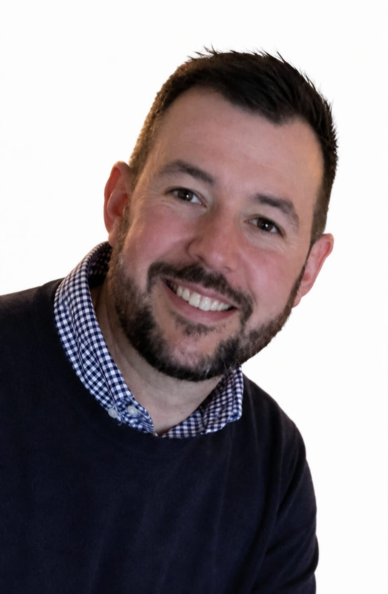

About Focused Services
Experience you can rely on. Repairs that keep you moving.
Focused Services is a family-run business built on over 21 years of experience in mechanics and hydraulics.
Founded by Richard, a qualified Level 3 City & Guilds mechanical engineer, the business provides specialist support across excavator and forklift attachments, mechanical repairs, servicing and inspections.
Richard is also qualified to carry out Thorough Examination inspections through the UK Material Handling Association (UKMHA), providing customers with a knowledgeable and professional service across a wide range of machinery.
With a practical, hands-on approach and experience built over two decades in the industry, Focused Services aims to provide straightforward, reliable support when customers need it most.
Family-run. Experienced. Focused.
